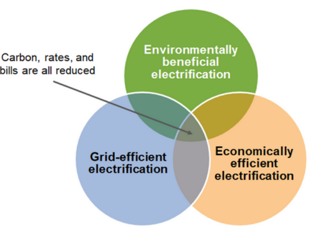
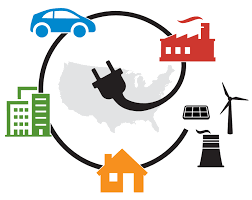
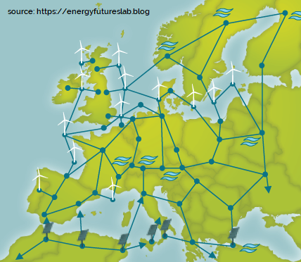

Sabías qué...
Electrificación. El desafío de la energía y la sostenibilidad
La energía mueve nuestro mundo. Seguro que has escuchado hablar de la importancia de las energías renovables. Seguro que también te ha sorprendido ver cómo de repente las ciudades se han llenado de patinetes, bicicletas e incluso coches eléctricos. Tal vez incluso tu seas dueño de alguno de ellos. Pero… ¿Qué está sucediendo realmente en el mundo y por qué de repente existe tanto interés en que “todo sea eléctrico”? ¿Es acaso esta electrificación de la sociedad la solución ante la contaminación ambiental?
Nuestra sociedad es adicta a la energía. ¿Sabías que el ordenador de tu casa consume la misma energía que la que necesitas para estar ahora mismo leyendo estas líneas? Cada acción, por insignificante que parezca, tiene un precio. Ya no es solo conducir al trabajo, la nevera de tu casa, la comida que compras o ver el último capítulo de tu serie favorita. Cada acción, cada producto que utilizamos necesita de grandes cantidades de energía para ser fabricado.
En la actualidad el consumo mundial alcanza los 165 Twh, el equivalente a detonar 1900 veces, cada año, la mayor bomba atómica jamás probada (50 Megatones). De esta cantidad, solo un 23% fue en forma de electricidad ¿Y el resto? Mayoritariamente proviene de la quema de combustibles, tanto para el transporte como en la fabricación industrial (sumando cerca del 40% mundial) y otras actividades como la agricultura y ganadería (25%) o la construcción (6%).
Se llama electrificación a la tendencia a consolidar la electricidad como la principal fuente de energía de todas las tecnologías actuales. El objetivo es claro, incrementar la participación de la electricidad en la suma total de la energía consumida. Si somos capaces de producir electricidad “limpia”, tiene sentido que queramos utilizarla en lugar de otras fuentes poco sostenibles.
El objetivo es reducir las emisiones de gases de efecto invernadero, el coste de la energía y la contaminación a través de la producción de energía eléctrica de forma eficiente, sostenible y rentable económicamente. Para ello se necesitan tres elementos esenciales:
- La existencia de tecnologías limpias de producción eléctrica, las también llamadas “energías limpias” y “energías renovables”
- La existencia de sistemas que permitan la distribución y almacenamiento de la energía de forma eficiente e inteligente.
- La existencia de sistemas que utilicen la electricidad como fuente de energía

Producir electricidad limpia.
Con respecto al primer punto ya es difícil tener dudas, nuestra sociedad ha logrado desarrollar estas tecnologías. Las placas solares, los molinos de viento o las centrales hidroeléctricas son claros ejemplos que en la actualidad ya son más rentables incluso que las centrales eléctricas tradicionales. Además, nuevas tecnologías como la fusión nuclear apuntan a garantizar un suministro energético “limpio” y abundante en un futuro no tan lejano.
Podemos producir electricidad para todos de forma sostenible entonces ¿Por qué no lo hemos hecho ya? Modificar la infraestructura de todo el planeta no es una tarea sencilla. El coste, la utilización de nuevos terrenos y el reciclaje de los materiales utilizados siguen siendo retos que poco a poco se van resolviendo.

El problema del almacenamiento.
Entonces... ¿Podemos dejar de quemar cosas y pasarnos a la electricidad limpia? Pues, a día de hoy no del todo...
Si, podemos generar electricidad suficiente para todos, pero ¿Cuanta y cuando? No consumimos siempre la misma cantidad de electricidad, Actualmente, disponemos de centrales que “apagamos” o “encendemos” en función de si necesitamos más energía en momentos puntuales. Cuando este sistema falla… es cuando sufrimos un “apagón”.
La electricidad que utilizamos debe producirse en el momento y este es el gran inconveniente de la mayoría de energías renovables ¿Y si es de noche? ¿Y si no hay viento? ¿Y si hay sequía? Las renovables no producen energía siempre, ni de forma constante, a veces generan de más, otras de menos. Cuando se encuentran combinadas con otras fuentes de energía, es fácil recurrir a ellas cuando “no hay suficiente energía”, y dejar de utilizarlas cuando “hay demasiada”. Pero… ¿Y si solo disponemos de renovables?. En la actualidad, vivir en una región con una generación de energía 100% renovable podría ser un auténtico infierno
En regiones como California, las plantas de energía solar y eólica cubren cerca del 30% de su demanda energética habitualmente, llegando a más del 50% en días con condiciones climáticas óptimas. La mayor demanda de energía suele producirse durante las últimas horas de la tarde, justo cuando la producción fotovoltaica es menor. Un fallo en las centrales “no renovables” de gas natural impidió que estas pudiesen ponerse en marcha, lo cual obligó a literalmente “apagar” parte del estado debido a la falta de energía. Lo irónico es, que durante estos mismos días, la producción de energía durante las horas centrales había sido tan elevada que se habían visto obligados a “tirarla” antes de provocar una sobrecarga de la red. Llegandose incluso a recomendar “apagones” preventivos para evitar los posibles daños por sobrecarga.
¿Cuál es la solución? A día de hoy podemos controlar el sol ni el viento… por lo que nuestra única alternativa es distribuir y almacenar la energía. El futuro renovable que promete la electrificación sólo será posible logrando ambos objetivos.
Las “Superredes”
En primer lugar, se apuesta por crear sistemas inteligentes de distribución. Una red eléctrica de tamaño continental, capaz de sobrepasar las limitaciones de los días nublados o sin viento. Son las llamadas “superredes”. La unión europea apuesta por la consolidación de este supergrid, donde cuando en un país se produce un exceso de electricidad, esta puede ser transferida a los vecinos que la necesiten, incluso a varios miles de kilómetros de distancia. El principal reto es la complejidad de controlar estos sistemas además de las grandes pérdidas de energía debidas al transporte a largas distancias. En la actualidad los planes de incrementar la interconectividad entre los distintos países de Europa es una de las prioridades del pacto verde Europeo.
Puedes ver la información actualizada en tiempo real sobre la red de distribución eléctrica europea actual en el siguiente enlace.

Las "Baterías"
La segunda alternativa es el almacenamiento. Si a veces nos sobra y otras nos falta… ¿Por qué no guardar cuando hay abundancia para periodos de escasez? Todos sabemos que existen las baterías ¿Por qué no usarlas? Este es uno de esos casos donde el tamaño sí importa. Una batería puede alimentar tu móvil por un par de días, pero… ¿Y una ciudad? ¿Y un país entero? ¿Cómo de grandes tendrían que ser?
Por lo general las baterías no son capaces de almacenar grandes cantidades de energía en relación a su tamaño. Actualmente las baterías de litio son la tecnología más eficaz para almacenar energía con alta densidad. Sin embargo, la escasez de los materiales necesarios para producirlas, su precio, el impacto ambiental de su fabricación, su corto periodo de vida y los riesgos de incendio o explosión asociados limitan su aplicabilidad a gran escala.
Regiones como California, debido a los problemas mencionados anteriormente están invirtiendo miles de millones en baterías de litio gigantes, que les permitan sustituir las contaminantes centrales de gas que utilizan actualmente para satisfacer su demanda cuando “falta energía”. Sin embargo es una alternativa cuyo coste, ambiental y económico no está al alcance de todos.
Es por ello que buscando superar las limitaciones de las baterías de litio, han surgido nuevas tecnologías como las baterías de metal líquido o las pilas de hidrógeno. Ambas presentan una mayor durabilidad, menor impacto ambiental y mayor densidad energética. Sin embargo aún se necesita tiempo e inversión para que puedan consolidarse como una alternativa madura.
Desde los años 80 la tecnología de las baterías de litio ha mejorado a pasos agigantados, solo en la última década su coste se ha reducido en más de 10 veces. Es de esperar que estas nuevas tecnologías pueden también desarrollarse de forma similar y aplicarse para el almacenamiento de la energía a gran escala. Necesitamos tiempo, pero disponemos de las bases para desarrollar nuevas tecnologías de almacenamiento.
¿Puede ser todo eléctrico?
Entonces… ¿En el futuro todo funcionará con electricidad? Pues… al menos en el futuro cercano parece ser que tampoco. Podemos producir electricidad limpia e incluso ser capaces de almacenarla para cuando la necesitemos. Pero… ¿Pueden utilizarse para todo?
Si bien la electricidad es muy versátil y podemos utilizarla rápidamente para casi cualquier aplicación, se trata de una de las formas más escurridizas de energía. La naturaleza raramente almacena la energía en forma de electricidad. Un concepto clave es la densidad energética. Este valor mide la cantidad de energía almacenada por volumen o masa (el peso) de un material.
Las baterías de las que hablábamos anteriormente tienen un gran problema: su tamaño y su peso. Las baterías nos permiten almacenar la energía de una ciudad entera pero no son lo ideal si buscas una forma de almacenar energía que ocupe poco espacio y no pese demasiado.
Las baterías nos ha permitido crear bicicletas, coches e incluso pequeñas embarcaciones y aeronaves eléctricas. Sin embargo, los vehículos pesados son los grandes olvidados de la electrificación. La tecnología actual no permite que los actuales sistemas de almacenamiento de electricidad puedan utilizarse para mover los trailers, cargueros o aviones que conectan nuestro mundo. Las baterías son demasiado grandes, demasiado pesadas y ofrecen una autonomía y tiempos de recarga lejos de las necesidades de estos vehículos.
Los aviones, barcos o camiones, son parte de la infraestructura logística fundamental que permite que nuestro mundo funcione. No obstante este sector es responsable de cerca del 20% de las emisiones totales de gases de efecto invernadero. Es necesario encontrar alternativas que permitan evitar las emisiones de estos vehículos y en el futuro cercano la electricidad no parece ser la alternativa. Es necesario encontrar una solución a las grandes cantidades de combustibles fósiles que consumen estos sistemas. Pero de eso ya hemos hablado anteriormente en nuestro post sobre biocombustibles.
Sin lugar a dudas es evidente que el futuro está lleno de retos, pero disponemos de los medios para resolver nuestros problemas, La ciencia y la tecnología son nuestra mejor herramienta, sin embargo es responsabilidad de todos exigir que estas se utilicen del modo adecuado y considerando la relación entre numerosos factores y todas las posibilidades.
-
Referencias
[1] https://blogs.elpais.com/eco-lab/2013/09/cuanto-consume-de-verdad-un-smartphone.html
[2] https://www.iea.org/reports/key-world-energy-statistics-2020
[3] https://datos.enerdata.net/energia-total/datos-consumo-internacional.html
[4] https://www.europarl.europa.eu/news/en/headlines/society/20200109STO69927/europe-s-one-trillion-climate-finance-plan
[5] https://www.greentechmedia.com/articles/read/just-how-much-business-can-batteries-take-from-gas-peakers#gs.bn4i7x
[6] https://www.ge.com/power/transform/article.transform.articles.2018.oct.storage-threat-to-peaker-plants#
[7] https://pv-magazine-usa.com/2018/11/08/california-regulators-approve-the-worlds-largest-battery-projects/
[8] https://ec.europa.eu/programmes/horizon2020/en/news/electrification-transport-system-expert-group-report-0
[9] https://www.nature.com/articles/srep12967 (Duración baterias litio a Alta T)
[10] https://pubs.acs.org/doi/10.1021/cr300205k (liquid metal batteries)
[11] https://ambri.com/benefits/
[12] https://www.sciencedirect.com/science/article/pii/S254243511830583X (Revisión sobre tecnologías de almacenamiento energético)
[13] https://www.datacenterdynamics.com/en/news/terrascale-deploy-ambri-liquid-metal-battery-energos-reno-project/ (AMbri deployement)
[14] https://www.entsoe.eu/data/map/ (Europe electric grid)
[15] https://www.electricitymap.org/zone/FR?solar=false&remote=true&wind=false (intensidad de la producción eléctrica)
[16] https://www.eesc.europa.eu/en/our-work/opinions-information-reports/opinions/strengthening-europes-energy-networks-communication